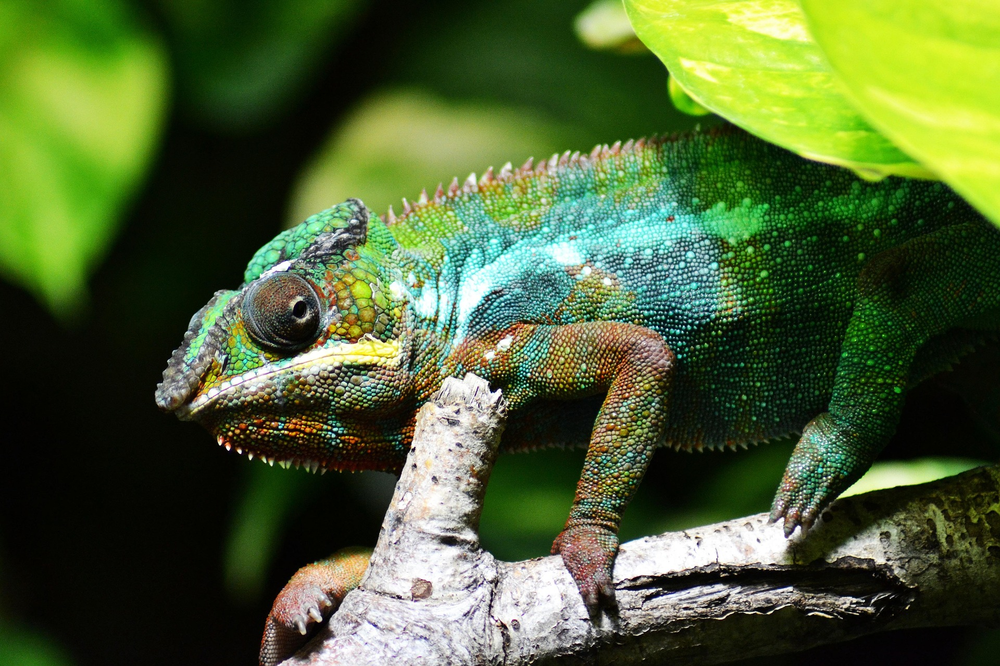

<html>
<head>
    <title>Menú Desplegable</title>
<body 
background="cas.jpg">
    <style>
          
    body { font-family: Arial, sans-serif; }
    
    .menu { margin: 0; padding: 0; list-style: none; }
    .menu li { float: left; position: relative; width: 150px; background-color: #333; }
    .menu li a { display: block; padding: 15px; color: white; text-decoration: none; text-align: center; }
    .menu li a:hover { background-color: #555; }

    .submenu { display: none; position: absolute; top: 100%; left: 0; margin: 0; padding: 0; list-style: none; }
    .submenu li { background-color: #444; width: 100%; }
    
    .menu li:hover > .submenu { display: block; }
 
    </style>
</head>
</html>
<body>

    <ul class="menu">
        <li><a href="#">Peces</a>
            <ul class="submenu">
                <li><a href="https://www.fishipedia.es/pez/betta-splendens">Pez Betta</a></li>
                <li><a href="https://www.fishipedia.es/pez/holacanthus-ciliaris">ángel reina</a></li>
                <li><a href="https://www.fishipedia.es/pez/hyphessobrycon-eques">Tetra serpae</a></li>
                <li><a href="https://www.tomscatch.com/es/especies-de-peces/marlin-blanco-11">Marlin Blanco</a></li>
                <li><a href="https://www.fishipedia.es/pez/hyphessobrycon-erythrostigma">Megalamphodus</a></li>
            </ul>
         </li>
        <li>
            <a href="#">Mamiferos</a>
            <ul class="submenu">
                <li><a href="gorila.html">Gorila</a></li>
                <li><a href="lemur.html">Lemur</a></li>
                <li><a href="caballo.html">Caballo</a></li>
                <li><a href="armadillo.html">Armadillo</a></li>
                <li><a href="reno.html">Reno</a></li>
            </ul>
        </li>
        <li><a href="#">Anfibios</a>
            <ul class="submenu">
                <li><a href="anfi2.html">Anfibios</a></li>
            </ul>
        </li>
        <li><a href="#">Aves</a>
            <ul class="submenu">
                <li><a href="https://www.nationalgeographicla.com/animales/loros">Loro</a></li>
                <li><a href="https://www.faunia.es/planea-tu-visita/animales/tucan-toco">Tucan Toco</a></li>
                <li><a href="https://deanimalia.com/selvaaguilafilipina.html">Águila Monera</a></li>
                <li><a href="https://aveschile.cl/picaflor-2/">Colibrí de Arica</a></li>
                <li><a href="https://laberintoenextincion.blogspot.com/2009/10/maca-tobiano.html">Macá Tobiano</a></li>
            </ul>
         </li>
         <li><a href="#">Reptiles</a>
        <ul class="submenu">
                <li><a href="coco.html">Cocodrilo De Agua Salada</a></li>
                <li><a href="torta.html">Tortuga gigante de galapagos</a></li>
                <li><a href="komodo.html">Dragon De Komodo</a></li>
                <li><a href="cama.html">Camaleon</a></li>
                <li><a href="ser.html">Serpiente De Cascabel</a></li>
            </ul>
         </li>
         <li><a href="index.html">Menu Principal</a>
         </li>
    </ul>

</body>
</html>

<html>
<head><title>Camaleón</title></head>
<body
 background="cel.jpg" text="white">
<center><font face="times new romans"><h2><marquee bgcolor="green" height="50" width="75%">Camaleón</marquee></h2></font></center> 
<center><h3><font face="calibri" color="red">(Chamaeleonidae)</font></h3></center>
<center></center>
<center><h4>Los camaleones viven principalmente en África y Madagascar, aunque también se encuentran en partes del sur de Europa, Oriente Medio y el sur de Asia. Habitan en una gran variedad de entornos cálidos, incluyendo selvas tropicales, desiertos, sabanas, bosques y matorrales, prefiriendo zonas con vegetación arbustiva para refugiarse.</h4></center><p>
<center><h3>Caracteristicas</h3></center>
<ol type="1">
 <li>Cambio de color (Cromatofóros): No solo cambian de color para camuflarse, sino también para regular su temperatura corporal (oscureciéndose para absorber más calor) y comunicarse con otros camaleones, mostrando colores brillantes para cortejar o advertir peligros.</li>
 <li>Visión independiente y 360°: Sus ojos pueden moverse independientemente el uno del otro, lo que les permite observar dos lugares diferentes simultáneamente y tener una visión de 360 grados, facilitando la caza y detección de depredadores. </li>
 <li>Lengua larga y rápida: Poseen una lengua retráctil que puede medir hasta el doble de su longitud corporal. Es extremamente rápida y está cubierta de una sustancia pegajosa para capturar presas a gran distancia en una fracción de segundo.</li>
 <li>Patas zigodáctilas y cola prensil: Adaptados a la vida en los árboles, sus patas tienen dedos fusionados en grupos (3 hacia afuera y 2 hacia adentro) que actúan como pinzas. Además, muchos tienen una cola prensil que funciona como una quinta extremidad para sujetarse. </li>
 <li>Comportamiento solitario y territorial: Son animales mayoritariamente solitarios que solo se encuentran con otros camaleones para aparearse. Son territoriales y pueden volverse agresivos, utilizando cambios de color para mostrar dominancia.</li>
</ol>
</body>
</html>